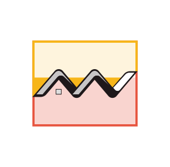

Analyses des anomalies
Network géographique
Accueil
Data Checker
Network relationnel
Network géographique
Profils à similarités tendancielles
Matrice des agrégations
Analyse spatio-temporelle des Cash-out par client
Scoring des transactions par client
Dashboard Client